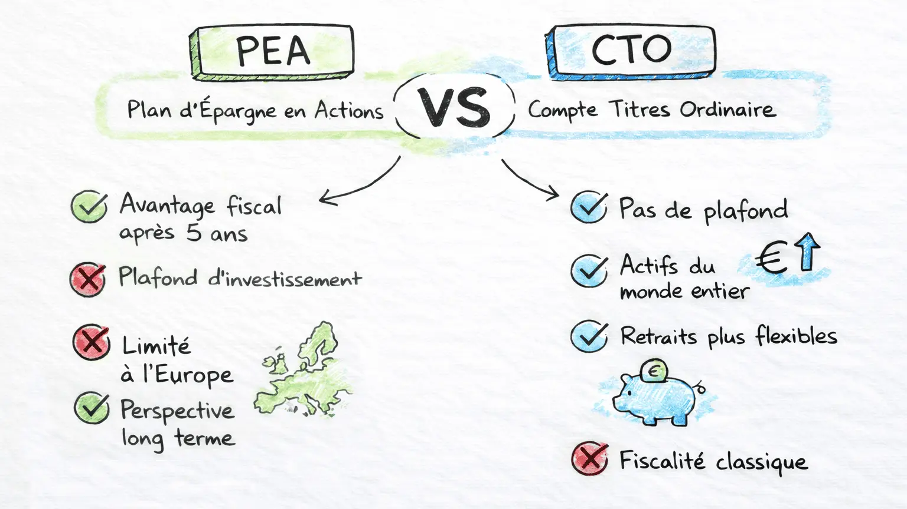

La théorie est acquise. Vous savez ce qu'est une action et pourquoi il faut en acheter. Maintenant, passons à la pratique : Où clique-t-on pour acheter ?
Contrairement à ce que l'on pense, vous n'avez pas besoin de téléphoner à la Bourse de New York ni d'aller au siège social de LVMH avec une valise de billets. Tout se passe en ligne, en quelques clics, via des intermédiaires sécurisés.
1. L'Intermédiaire : Le Courtier (Broker) 🏦
Vous ne pouvez pas accéder directement au marché boursier en tant que particulier. Vous avez besoin d'un passeur, d'un intermédiaire agréé qui a le droit de transmettre vos ordres d'achat et de vente au marché. Cet intermédiaire s'appelle un Courtier (ou Broker en anglais).
- Intermédiaire qui met en relation un acheteur et un vendeur.
- En finance : Société financière agréée par les régulateurs (AMF en France, FSMA en Belgique) qui exécute les ordres de bourse de ses clients et conserve leurs titres.
Il existe aujourd'hui deux grandes familles de courtiers. Votre choix ici déterminera vos frais pour les 20 prochaines années, choisissez bien !
- 🏛️ Les Banques Traditionnelles (BNP, Société Générale, Belfius...) : C'est la solution de facilité ("J'ouvre mon compte bourse là où j'ai mon compte courant"). ATTENTION : C'est souvent le pire choix. Leurs frais sont généralement exorbitants (frais de garde, frais de passage d'ordre élevés). Elles vivent encore sur un modèle ancien.
- 💻 Les Courtiers en Ligne (Boursorama, Fortuneo, Trade Republic, Saxo, Degiro, Interactive Brokers...) : Ce sont des acteurs spécialisés, souvent 100% en ligne. N'ayant pas d'agences physiques à payer, leurs frais sont minimes (parfois 1€ l'ordre, voire gratuit). C'est le choix privilégié des investisseurs modernes.
Mon conseil : Fuyez les banques traditionnelles pour investir. Les frais vont grignoter votre performance. Optez pour un courtier en ligne réputé et régulé.
Cependant, tous les courtiers en ligne ne se valent pas. Avant de signer, vérifiez ces 3 types de frais dans la grille tarifaire :
- Les frais de transaction : Le prix à payer quand vous achetez ou vendez (ex: 1€ par ordre). C'est le plus visible.
- Les frais de change (FX) : ⚠️ Le piège n°1. Si vous achetez une action américaine (en dollars) avec votre compte en euros, le courtier prend une commission sur le change. Certains prennent 0,1% (honnête), d'autres 0,5% ou plus (du vol).
- Les frais d'inactivité : Certains courtiers vous facturent si vous ne passez pas d'ordre pendant un mois. À fuir pour un investisseur long terme.
Vos actions ne sont pas dans le bilan du courtier. Elles sont stockées chez un dépositaire central. Si votre courtier fait faillite, vos actions vous appartiennent toujours, elles seront simplement transférées chez un autre courtier. Seul votre "Cash" (l'argent non investi qui dort sur le compte) est garanti à hauteur de 100 000€ (Garantie des dépôts européenne).
2. Le Contenant : Choisir son Enveloppe Fiscale ✉️
Une fois le courtier choisi, vous devez ouvrir un compte spécifique. On appelle ça une "enveloppe fiscale". C'est comme choisir le type de sac dans lequel vous allez mettre vos courses : selon le sac choisi, l'État vous taxera différemment à la sortie.
C'est ici que la distinction se fait selon votre pays de résidence fiscale.
🇫🇷 Pour les Résidents FrançaisVous avez deux options principales. Le match est souvent plié d'avance pour les débutants.
| PEA (Plan d'Épargne en Actions) | CTO (Compte-Titres Ordinaire) |
|---|---|
|
C'est le "Cadeau Fiscal" de l'État.
|
C'est le compte "Liberté Totale".
|
⚠️ Un dernier détail crucial pour les Français (L'IFU) :
Si vous ouvrez un CTO, choisissez un courtier qui fournit l'IFU (Imprimé Fiscal Unique) (comme Boursorama, Fortuneo, ou Trade Republic depuis peu). Cela permet à vos impôts d'être pré-remplis. Si vous choisissez un courtier étranger qui ne le fournit pas, vous devrez calculer et déclarer chaque dividende et plus-value manuellement. Un enfer administratif à éviter pour débuter !

💡 Stratégie recommandée (France) : Ouvrez toujours un PEA en premier pour prendre date (le compteur des 5 ans démarre à l'ouverture). Remplissez-le au maximum. Ouvrez ensuite un CTO en parallèle si vous voulez vraiment faire du stock-picking US, car il est possible de s'exposer au marché américain via des ETFs synthétiques sur PEA (on y reviendra plus tard).
La Belgique ne propose pas d'équivalent au PEA français. Le système est plus simple, mais différent.
- Le Compte-Titres (CTO) est la norme : C'est l'enveloppe unique pour tout le monde.
- Pas d'impôt sur la plus-value (sous conditions) : C'est le grand avantage belge. Si vous investissez en "bon père de famille" (sur le long terme, sans spéculation agressive), vos gains à la revente sont exonérés d'impôts (0%).
- La Taxe sur les Opérations de Bourse (TOB) : À chaque achat et à chaque vente, vous payez une petite taxe (souvent 0,35%).
- La Taxe sur les Dividendes : Les dividendes perçus sont taxés à la source à 30% (Précompte mobilier). C'est pourquoi de nombreux investisseurs belges préfèrent les ETF "Capitalisants" (qui ne versent pas de dividendes mais les réinvestissent automatiquement) pour éviter cette taxe.
3. Comment ouvrir un compte ? (Le parcours du combattant... facile) 📝
Ouvrir un compte-titres ou un PEA chez un courtier en ligne moderne prend environ 10 minutes. C'est une obligation légale appelée KYC (Know Your Customer) pour lutter contre le blanchiment d'argent. Préparez-vous, voici ce qu'on va vous demander :
- Informations personnelles : Nom, adresse, situation professionnelle, revenus (approximatifs).
- Preuves d'identité : Photo de votre Carte d'Identité ou Passeport.
- Justificatif de domicile : Une facture d'électricité ou de téléphone de moins de 3 mois.
- Le Selfie : De plus en plus courant, l'application vous demandera de prendre un selfie vidéo ou photo pour prouver que vous êtes bien vivant et que c'est bien vous.
Ne soyez pas effrayé par ces demandes, elles prouvent que le courtier est sérieux et respecte la loi. Une fois validé (24h à 48h), vous pouvez faire votre premier virement et... vous êtes prêt à acheter votre première action !
🔑 Ce qu'il faut retenir
Pour investir, fuyez votre banque traditionnelle trop chère et choisissez un Courtier en ligne (Broker).
Si vous êtes Français 🇫🇷, ouvrez impérativement un PEA pour profiter de l'exonération d'impôt après 5 ans. Si vous êtes Belge 🇧🇪, le Compte-Titres classique est la norme, avec l'avantage de l'absence d'impôt sur la plus-value pour l'investissement long terme.